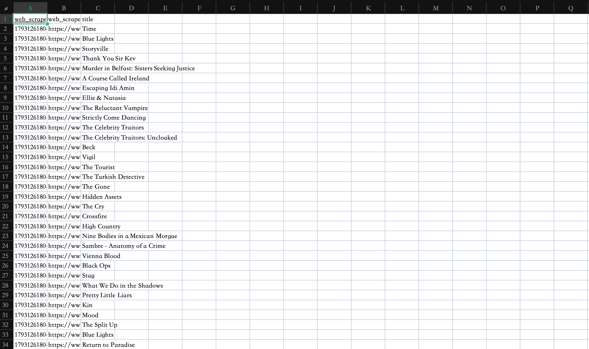
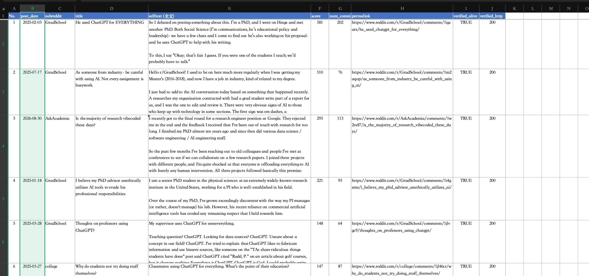
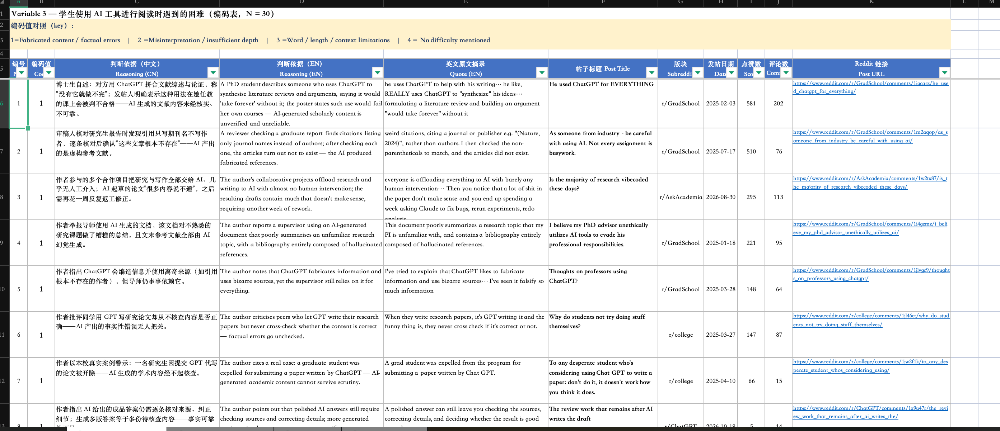
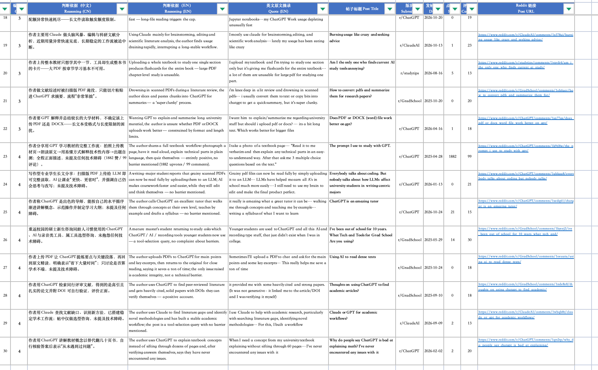

I'm a digital media student exploring web production and data scraping practices, documenting every learning step from writing first HTML to analyzing real web content datasets.
Orientation week, got familiar with the course framework and learning objectives, sorted out the key nodes of web building and data practice in the semester, and laid a clear direction for subsequent hands-on learning.
Learned basic HTML structure and CSS styling rules, tried to write static page code independently, mastered color matching and basic layout logic, and completed the first version of the personal learning page.
Used the Web Scraper tool to collect the programme list data of BBC New & Trending, exported it into CSV format, learned how to convert unstructured web content into structured datasets, and observed that the platform's content focus is more on crime and documentary series.

In Week 4, I organised collected Reddit posts into a coded spreadsheet, tagging AI reading issues like fake citations, shallow analysis and length limits with numerical values. The process showed me how keyword choices and selecting high-engagement posts shape the dataset, and made me see the real student pain points behind the neat coded table.

style="font-size:0.9em; color:#666; text-align:center; margin:5px 0 15px 0;">Raw scraped post data in CSV format

style="font-size:0.9em; color:#666; text-align:center; margin:5px 0 15px 0;">Coded category spreadsheet part 1

style="font-size:0.9em; color:#666; text-align:center; margin:5px 0 15px 0;">Coded category spreadsheet part 2